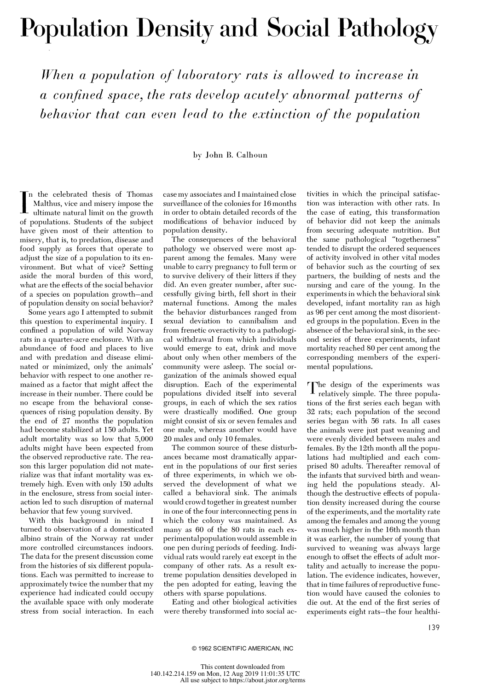
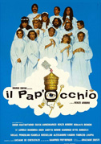
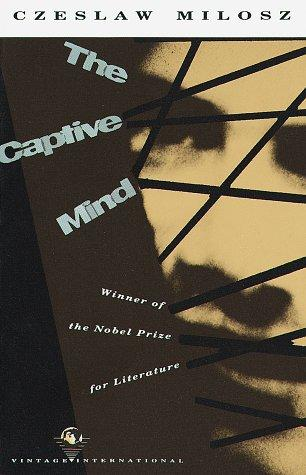
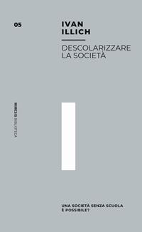
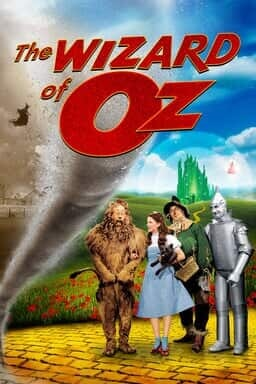

1:03:31 · 9 OPERE
Da dove proviene l'illusione?
Il filo del discorso
L’illusione è presentata come perdita della capacità di giudicare autonomamente ciò che si ascolta e si legge. Il relatore parte dal deterioramento della comunicazione pubblica, richiama Socrate e il motto kantiano dell’Illuminismo, quindi accosta gli studi di Calhoun sulle colonie di roditori alla propria diagnosi polemica della società contemporanea.
Leggi la sintesi completaRiduci la sintesi
Il confronto con gli esseri umani rimane un’analogia proposta nel video: lo studio del 1962 sui ratti e il successivo Universe 25 sui topi sono esperimenti distinti e non dimostrano un progetto deliberato di manipolazione sociale. Il discorso si sposta sull’autorità dei mezzi di comunicazione, sulla demografia e sulle competenze dei dirigenti, per approdare a controversie riguardanti università americane, istituzioni europee e conflitto israelo-palestinese. I giudizi e le accuse sono mantenuti come posizioni del relatore, con note che distinguono documenti, interpretazioni ed elementi non riscontrati. La seconda parte ruota attorno a La mente prigioniera di Czesław Miłosz: letture sulla pressione ideologica e sul conformismo diventano uno specchio del presente. Il richiamo a Illich e l’incontro immaginato fra l’uomo di Marcuse e quello di Musil preparano la conclusione cinematografica del mago di Oz, nella quale spostare la tenda significa interrogare chi produce la rappresentazione. La scheda conserva questa domanda senza scambiare la voce critica ricostruita da Miłosz per un’adesione dell’autore alle ideologie che analizza.
I libri nel discorso

Population Density and Social Pathology
Note sul riferimento
Prima pagina dell’articolo originale, Scientific American, febbraio 1962: Scientific American · prima pagina originale, febbraio 1962
Prima pagina dell’articolo del 1962, p. 139, dal facsimile JSTOR, con titolo, firma e note. È una pagina di articolo, non una copertina commerciale. Il PDF integrale resta privato. La data è verificata presso l’editore e PubMed; non è il distinto estratto del 1970 omonimo.
A 391.68 sono indicati il 1962 e il saggio; a 421.72 titolo inglese quasi esatto e rivista invertita dalla trascrizione automatica. Normalizzati and, Calhoun e Scientific American tramite editore e PubMed. Non confuso con Death Squared o con l’estratto omonimo del 1970.

Risposta alla domanda: che cos’è l’Illuminismo?
Identificazione probabile
Note sul riferimento
Copertina della raccolta che comprende il saggio sull’Illuminismo: Firenze University Press · Sette scritti politici liberi · 2011 · a cura di Maria Chiara Pievatolo
Copertina del volume cartaceo FUP che comprende il saggio, riscontrato dal catalogo universitario. L’ISBN appartiene alla raccolta; il filmato non annuncia un’edizione e il titolo del saggio è un’identificazione probabile della citazione.
Kant e sapere aude sono espliciti. Il titolo dell’opera non è pronunciato: collegamento probabile al noto passo dell’articolo sull’Illuminismo, non citazione del titolo.

Il pap’occhio
Note sul riferimento
Locandina del film Il pap’occhio, 1980: Film italiano diretto da Renzo Arbore, 1980. Il 1998 nella scheda CEI riguarda la riedizione, non la produzione originale. Locandina del film con la compagnia in abiti bianchi; non è Il resto del Pap’occhio, opera distinta di materiali aggiuntivi.
Locandina del film. Titolo, personaggi e provenienza sono coerenti con il film di Arbore. Non è una copertina di libro o del film di materiali aggiuntivi.
Arbore, il titolo Papocchio e il ricordo del coro napoletano sono espliciti. Film del 1980 riscontrato presso Rai Teche e testimonianze dei realizzatori. Nessun titolo musicale dedotto dalla parafrasi.

La mente prigioniera / The Captive Mind (Zniewolony umysł)
Note sul riferimento
Copertina: Vintage International · paperback 1990
Copertina autentica del paperback Vintage International, 11 agosto 1990, ISBN 9780679728566, distribuita da OpenLibrary. Titolo e Czesław Miłosz sono visibili. Non si attribuisce questa edizione alla copia inglese del video. Il titolo originale polacco e le altre traduzioni sono registrati senza trasformare tre lingue in tre opere.
Czesław Miłosz è introdotto a 2091; The Captive Mind è pronunciato a 2411.17, La mente prigioniera a 2487.05. Citazioni riprese a 2645, 2750 e 3699: diversi contesti dei capitoli I e II. Edizione inglese consultata non identificata con certezza.

Divina Commedia
Note sul riferimento
Copertina: Giunti Barbera · Passepartout, 2021 · edizione di riferimento
Dante e Divina Commedia sono pronunciati nell’esempio sui titoli originali e le traduzioni tedesche. Non è una lettura di un canto specifico.

Descolarizzare la società. Una società senza scuola è possibile?
Note sul riferimento
Copertina: Mimesis, collana Mimesis. Biblioteca, 2019, ISBN 9788857556321. Edizione italiana moderna di riferimento, non prima edizione dell’opera.
Immagine autentica dell’opera, controllata visivamente; l’edizione di riferimento non è attribuita al filmato.
Ivan Illich e il titolo inglese deformato dalla trascrizione automatica, poi Descolarizzare la società, sono espliciti a 3499–3512. L’edizione non è identificata.

L’uomo a una dimensione
Note sul riferimento
Copertina: Einaudi, Piccola Biblioteca Einaudi, 1999
Copertina di un’edizione bibliografica dell’opera, con introduzione di Luciano Gallino. La citazione nel video resta probabile; questa edizione non vi è confermata.
L’uomo a una dimensione e Marcuse sono pronunciati insieme; Marcus normalizzato al nome dell’autore dell’opera.

L’uomo senza qualità
Note sul riferimento
Copertina: Newton Compton · eBook di riferimento
L’uomo senza qualità è nominato; la trascrizione automatica rende Dusil il nome Musil. L’abbinamento titolo-autore è verificabile e.

Il mago di Oz / The Wizard of Oz
Note sul riferimento
Immagine ufficiale Warner · edizione 4K del film del 1939: Film MGM,1939, con Judy Garland; la scheda Warner reca25 agosto 1939. Immagine promozionale ufficiale della distribuzione4K attuale, non una stampa originale della prima uscita e non copertina del romanzo del 1900.
Keyart contemporaneo della versione4K, proveniente dalla scheda Warner Bros. Non datato come poster originale 1939 e non attribuito alla specifica scena dietro la tenda.
Titolo, scena dell’uomo dietro la tenda e richiamo alla battuta inglese identificano il film del 1939. La formulazione non è attestata come citazione del romanzo di Baum.